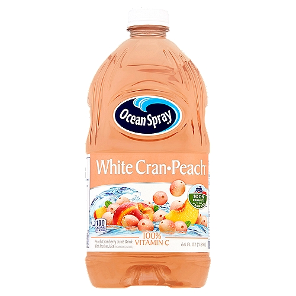

- Apple
- Orange
- White Cran-Peach  Click Here
- Strawberry-Kiwi Click Here
- Grape
 Click Here
Click Here
 Click Here
Click Here
 Click Here
Click Here
- Potato
- Whole Wheat
- Sourdough
- White
- Raisin


- Lays Potato Chips
- Donuts
- Oreos
- Fruit Snacks
- Popcorn


- 2% milk
- Mozzarella Cheese
- Heavy Cream
- Greek Yogurt
- Salted Butter

- Broccoli
- Cauliflower
- Spinach
- Carrots
- Potatos